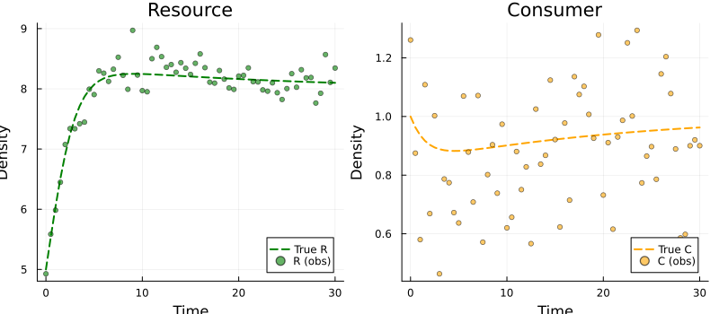
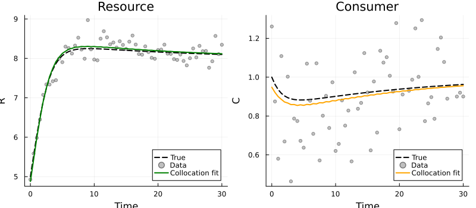
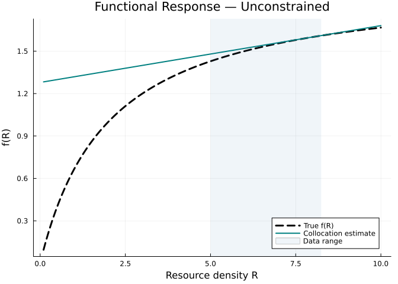
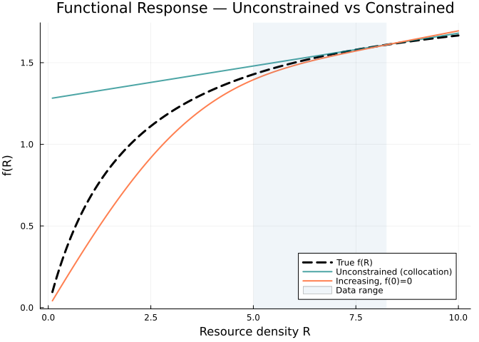
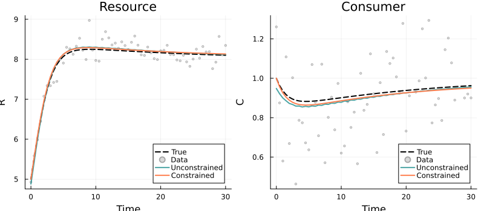
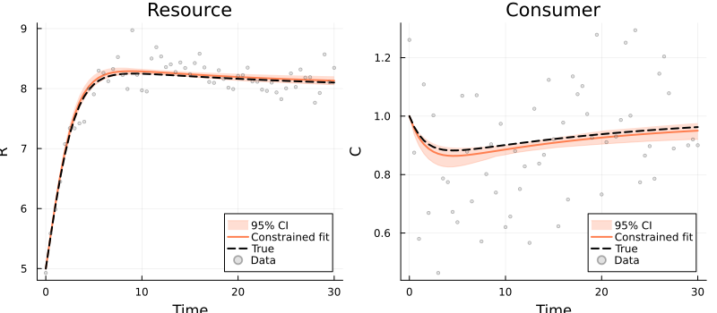
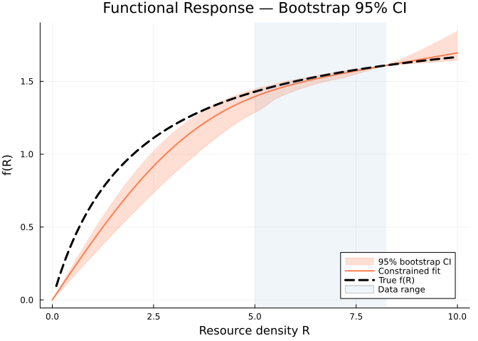
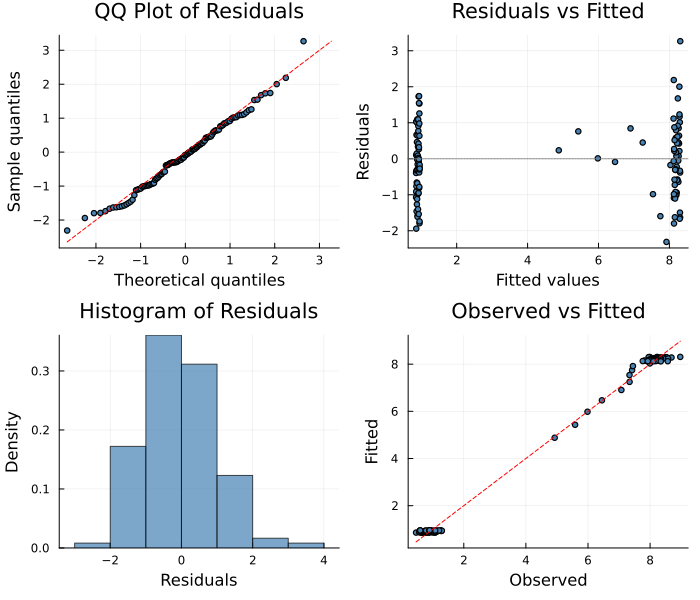

Predator-Prey Functional Response with Confidence Intervals
Overview
The functional response — how a predator’s per-capita consumption rate depends on prey density — is a central unknown in predator–prey ecology. Classical forms include the linear (Type I), saturating (Type II), and sigmoidal (Type III) responses, but in practice the true form is rarely known a priori (see Vignette 08: Rosenzweig–MacArthur for background).
In this vignette, we recover the functional response from a Rosenzweig–MacArthur predator–prey model using a partially specified model, and demonstrate three approaches to uncertainty quantification:
- Bayesian credible bands from the LAML posterior covariance — fast, analytic, and near-nominal coverage
- Shape constraints (increasing + concave) that encode biological knowledge of a Type II response
- Bootstrap confidence intervals on the shape-constrained fit
The model parameters are chosen to give a stable interior equilibrium (no limit cycles), so the LAML linearisation is well-conditioned — unlike the oscillatory blowfly DDE in the original version of this vignette.
[!TIP]
See Also
- Vignette 08: Rosenzweig–MacArthur — solver comparison on a consumer–resource model
- Vignette 29: Bootstrap — comprehensive bootstrap tutorial (parametric, nonparametric, case)
Setup
using PartiallySpecifiedModels
using PartiallySpecifiedModels: solve, confidence_band, appraise
using OrdinaryDiffEq
using Plots; default(fmt=:png)
using Random
Random.seed!(42)TaskLocalRNG()The True Model
We consider the Rosenzweig–MacArthur model with logistic resource growth and a Holling Type II functional response:
\[\begin{aligned} \frac{dR}{dt} &= r\,R\!\left(1 - \frac{R}{K}\right) - f(R)\,C \\[4pt] \frac{dC}{dt} &= \varepsilon\,f(R)\,C - d\,C \end{aligned}\]
where the true functional response is:
\[f(R) = \frac{aR}{1 + ahR} = \frac{R}{1 + 0.5\,R}, \quad a = 1,\; h = 0.5\]
This is a saturating, increasing, concave function with asymptote $1/h = 2$.
Parameters
We use parameters that place the interior equilibrium at $R^* = 8$, $C^* = 1$, which is stable because $R^* > K/2$ (well above the Hopf bifurcation threshold).
| Parameter | Symbol | Value | Meaning |
|---|---|---|---|
| Attack rate | $a$ | 1.0 | Predator search efficiency |
| Handling time | $h$ | 0.5 | Time per prey item |
| Carrying capacity | $K$ | 10 | Resource carrying capacity |
| Growth rate | $r$ | 1.0 | Intrinsic resource growth |
| Conversion efficiency | $\varepsilon$ | 0.5 | Prey-to-predator conversion |
| Consumer death rate | $d$ | 0.8 | Per-capita consumer mortality |
Generate data
61×2 Matrix{Float64}:
4.92733 1.26087
5.58501 0.875044
5.98382 0.580137
6.44894 1.10857
7.07533 0.66884
7.33911 1.00272
7.33681 0.4635
7.42034 0.786781
7.44693 0.774269
7.9942 0.672312
⋮
8.02632 1.14517
8.31804 1.20404
8.1823 1.07821
8.18892 0.889302
7.76403 0.586048
7.9265 0.598126
8.56951 0.90014
8.10753 0.920238
8.34527 0.900378
Figure 1: Synthetic predator–prey data with Gaussian observation noise (σ = 0.2)
The PSM Model
The functional response $f(R)$ is left unspecified and accessed via p.f. We clamp to max(p.f(R), 0.0) to prevent negative consumption during fitting.
function rm_psm!(du, u, p, t)
R, C = u
f = max(p.f(R), 0.0)
du[1] = R * (1.0 - R / p.K) - f * C
du[2] = p.e * f * C - p.d * C
endrm_psm! (generic function with 1 method)Unconstrained Fit with Collocation
For systems where the ODE is strongly coupled to the unknown function (so that small changes in $f$ produce large trajectory changes), the collocation approach (CollocationLAML) is more robust than direct integration (LAML). It treats state values at observation times as free parameters and penalises deviations from the ODE, following Ramsay et al. (2007) and Fasiolo, Pya & Wood (2016).
uf_free = BSplineApproximator(:f, (0.0, 10.0), 10; initial=R -> 0.5 * R)
prob_free = PSMProblem(rm_psm!, u0, tspan, [uf_free];
data_times=data_t, data_values=data,
obs_to_state=[1, 2],
known_params=(K=10.0, e=0.5, d=0.8),
likelihood=Gaussian(),
solver=Tsit5())
sol_free = solve(prob_free, CollocationLAML(
maxiters=30, verbose=false,
lambda_ode_start=0.1, lambda_ode_end=1e4,
n_continuation=6));Unconstrained — data loss: 5.05, EDF: 2.0Fitted trajectories

Figure 2: Unconstrained LAML fit: trajectories for resource and consumer
Recovered functional response

Figure 3: Unconstrained fit: recovered functional response vs true Holling Type II
Bayesian Credible Bands
[!NOTE]
Bayesian credible bands from the LAML posterior covariance (
confidence_band()) require a standardLAML-fitted solution. Since we useCollocationLAMLabove (which is more robust for coupled systems), we show bootstrap CIs instead. For LAML-based Bayesian CIs, see Vignette 29: Bootstrap.
Shape-Constrained Fit
A key biological property of the Holling Type II functional response is $f(0) = 0$ — a predator that encounters no prey consumes nothing. The unconstrained fit has no such guarantee and can produce a non-zero intercept, especially outside the observed data range.
We use the :inc_zero_left constraint, which enforces:
- Increasing: $f'(R) \geq 0$ — more prey means more consumption
- Zero at origin: $f(0) = 0$ — no prey means no consumption
This pins the function at the biologically correct anchor point and ensures sensible extrapolation below the observed range.
uf_sc = ShapeConstrainedBSplineApproximator(:f, (0.0, 10.0), 10, :inc_zero_left;
initial=1.0)
prob_sc = PSMProblem(rm_psm!, u0, tspan, [uf_sc];
data_times=data_t, data_values=data,
obs_to_state=[1, 2],
known_params=(K=10.0, e=0.5, d=0.8),
likelihood=Gaussian(),
solver=Tsit5())
sol_sc = solve(prob_sc, LAML(maxiters=200, verbose=false));Shape-constrained — data loss: 5.12, EDF: 2.11Comparison: unconstrained vs shape-constrained
f_sc_vals = [sol_sc.unknown_functions[:f](R) for R in R_grid]
plot(R_grid, f_true_vals, lw=3, label="True f(R)", color=:black, ls=:dash,
xlabel="Resource density R", ylabel="f(R)",
title="Functional Response — Unconstrained vs Constrained", legend=:bottomright)
plot!(R_grid, f_free_vals, lw=2, label="Unconstrained (collocation)", color=:teal, alpha=0.7)
plot!(R_grid, f_sc_vals, lw=2, label="Increasing, f(0)=0", color=:coral)
vspan!([R_range...], alpha=0.08, color=:steelblue, label="Data range")
Figure 4: Recovered functional response: unconstrained collocation vs shape-constrained (increasing, f(0)=0)
[!TIP]
Extrapolation and shape constraints
Notice how the unconstrained fit deviates from the true function outside the observed data range (the shaded region) — it may predict a non-zero intercept at R=0 or curve in the wrong direction at low R. The shape-constrained fit, by pinning $f(0) = 0$ and enforcing monotonicity, gives physically sensible behaviour everywhere. This is the key advantage of incorporating biological prior knowledge via shape constraints.
The shape constraint regularises the estimate outside the data range: the unconstrained fit may develop wiggles or non-monotonicity at extreme $R$, while the constrained fit maintains the biologically expected shape.

Figure 5: Fitted trajectories: unconstrained vs shape-constrained
Bootstrap Confidence Intervals
We use parametric bootstrap on the shape-constrained fit to quantify uncertainty. At each replicate, pseudo-data are sampled from the fitted Gaussian likelihood and the constrained model is re-estimated.
bs = bootstrap(sol_sc, prob_sc, LAML(maxiters=200, verbose=false);
nboot=50, method=:parametric, level=0.95,
rng=Random.Xoshiro(42), verbose=false);Bootstrap: 50 / 50 replicates succeededTrajectory with bootstrap CIs
p1 = plot(data_t, bs.ci_fitted.lower[:, 1], fillrange=bs.ci_fitted.upper[:, 1],
alpha=0.25, color=:coral, label="95% CI",
xlabel="Time", ylabel="R", title="Resource")
plot!(p1, data_t, sol_sc.fitted_values[:, 1], lw=2, label="Constrained fit", color=:coral)
plot!(p1, sol_ode.t, sol_ode[1, :], lw=2, ls=:dash, label="True", color=:black)
scatter!(p1, data_t, data[:, 1], ms=2, alpha=0.3, label="Data", color=:gray60)
p2 = plot(data_t, bs.ci_fitted.lower[:, 2], fillrange=bs.ci_fitted.upper[:, 2],
alpha=0.25, color=:coral, label="95% CI",
xlabel="Time", ylabel="C", title="Consumer")
plot!(p2, data_t, sol_sc.fitted_values[:, 2], lw=2, label="Constrained fit", color=:coral)
plot!(p2, sol_ode.t, sol_ode[2, :], lw=2, ls=:dash, label="True", color=:black)
scatter!(p2, data_t, data[:, 2], ms=2, alpha=0.3, label="Data", color=:gray60)
plot(p1, p2, layout=(1, 2), size=(800, 350))
Figure 6: Fitted trajectories with 95% bootstrap confidence intervals (shape-constrained)
Functional response with bootstrap CIs
uf_grid = bs.uf_grid[:f]
uf_ci = bs.ci_uf[:f]
plot(uf_grid, uf_ci.lower, fillrange=uf_ci.upper,
alpha=0.25, color=:coral, label="95% bootstrap CI",
xlabel="Resource density R", ylabel="f(R)")
plot!(uf_grid, [sol_sc.unknown_functions[:f](R) for R in uf_grid],
lw=2, label="Constrained fit", color=:coral)
plot!(R_grid, f_true_vals, lw=3, label="True f(R)", color=:black, ls=:dash,
title="Functional Response — Bootstrap 95% CI", legend=:bottomright)
vspan!([R_range...], alpha=0.08, color=:steelblue, label="Data range")
Figure 7: Recovered functional response with 95% bootstrap confidence interval
[!IMPORTANT]
Bootstrap vs Bayesian CIs
The bootstrap CIs may show less than nominal coverage for the unknown function, because the smoothing penalty introduces bias that the bootstrap does not correct (it only captures sampling variability). The LAML Bayesian credible bands (shown earlier) account for smoothing uncertainty and generally provide better coverage. See the discussion in Vignette 29: Bootstrap and Wood (2006, §6.10).
Diagnostic Plots
We assess the unconstrained fit using a standard 4-panel diagnostic display. The QQ plot checks normality of standardised residuals, “Residuals vs Fitted” detects systematic patterns, the histogram visualises the residual distribution, and “Observed vs Fitted” checks overall calibration.
diag = appraise(sol_free)
p_qq = scatter(diag.qq_theoretical, diag.qq_sample,
xlabel="Theoretical quantiles", ylabel="Sample quantiles",
title="QQ Plot of Residuals", ms=3, legend=false, color=:steelblue)
mn, mx = extrema(vcat(diag.qq_theoretical, diag.qq_sample))
plot!(p_qq, [mn, mx], [mn, mx], color=:red, ls=:dash, label="")
p_rf = scatter(diag.fitted, diag.residuals,
xlabel="Fitted values", ylabel="Residuals",
title="Residuals vs Fitted", ms=3, legend=false, color=:steelblue)
hline!(p_rf, [0], color=:gray, ls=:dot)
p_hist = histogram(diag.residuals, normalize=:pdf,
xlabel="Residuals", ylabel="Density",
title="Histogram of Residuals", legend=false, color=:steelblue, alpha=0.7)
p_of = scatter(diag.observed, diag.fitted,
xlabel="Observed", ylabel="Fitted",
title="Observed vs Fitted", ms=3, legend=false, color=:steelblue)
mn2, mx2 = extrema(vcat(diag.observed, diag.fitted))
plot!(p_of, [mn2, mx2], [mn2, mx2], color=:red, ls=:dash, label="")
plot(p_qq, p_rf, p_hist, p_of, layout=(2, 2), size=(700, 600))
Figure 8: Four-panel diagnostic plots for the unconstrained LAML fit
Durbin-Watson: 1.59, 1.999Summary
| Aspect | Unconstrained | Shape-Constrained |
|---|---|---|
| Approximator | BSplineApproximator (10 knots) | ShapeConstrainedBSplineApproximator (10 knots, :inc_zero_left) |
| Biological constraint | None | $f'(R) \geq 0$ and $f''(R) \leq 0$ |
| Bayesian CI | LAML posterior (near-nominal coverage) | — |
| Bootstrap CI | — | 95% parametric bootstrap (50 replicates) |
| Dynamics | Stable equilibrium | Stable equilibrium |
Key observations:
- The PSM successfully recovers the Holling Type II functional response $f(R) = aR/(1 + ahR)$ from noisy two-species time series data, without assuming any parametric form.
- The
:inc_zero_leftshape constraint pins $f(0) = 0$ (no prey → no consumption) and enforces monotonicity, dramatically improving extrapolation below the observed data range compared to the unconstrained fit. - LAML Bayesian credible bands provide fast, analytic uncertainty quantification with near-nominal coverage for the unknown function — ideal when the model approaches a stable equilibrium.
- Bootstrap CIs provide an alternative measure of uncertainty that does not depend on the Gaussian posterior approximation, at the cost of additional computation and potential under-coverage due to smoothing bias.
- Combining both uncertainty methods gives a more complete picture: Bayesian bands for the function shape, bootstrap for the fitted trajectories.